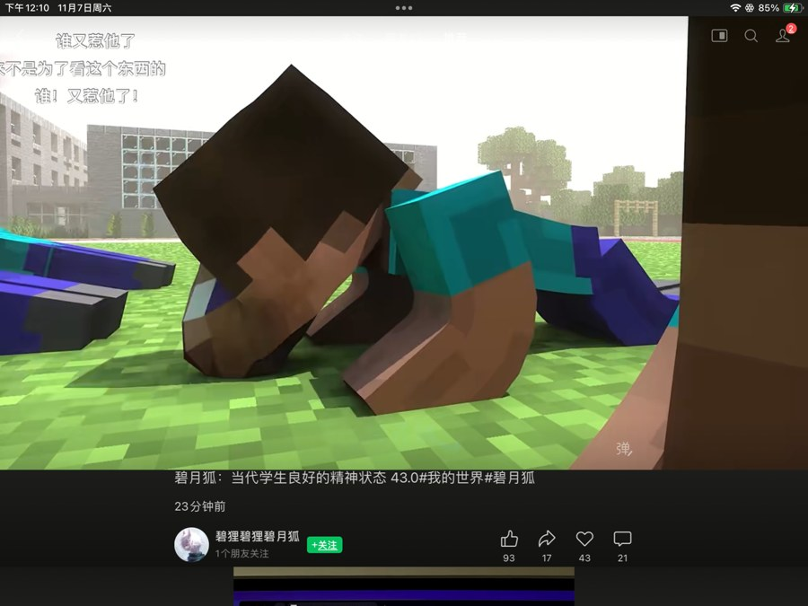
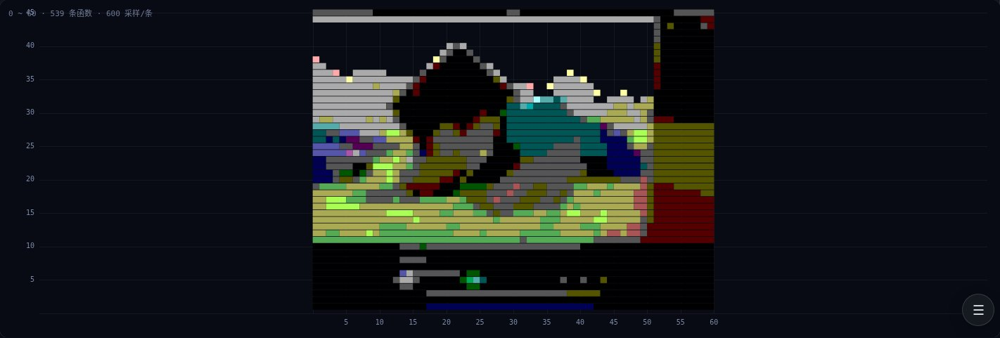
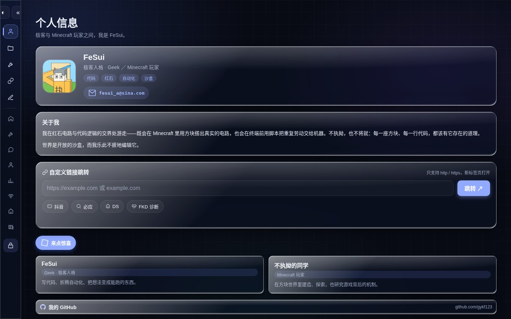

没有广告
真的没有。不弹窗、不跳转、不在你点按钮的时候突然变出个「恭喜中奖」。
你懂的——网上的工具站，要么广告比功能多，要么点进去先是三秒闪屏。 找个小工具跟闯关似的。于是我寻思：算了，自己搓一个。
真的没有。不弹窗、不跳转、不在你点按钮的时候突然变出个「恭喜中奖」。
不用注册、不用充会员、不用看 30 秒视频解锁。点开，然后就用。
不是那种建完就扔的站。工具在加、页面在改，连 AI 都被拉来打工了。
以前那套糊紫渐变 + 满屏方块 emoji，自己看着都尴尬。现在——深蓝黑、细网格、分层卡片，一个字：稳。
对，你没看错。上传一张图，它按分辨率把每个彩色小格变成一条函数，还带颜色。每条函数用 +0√(x−xmin)+0√(xmax−x) 把自己锁死在小格子里——根号下不能为负嘛，区间外直接「不存在」。拼起来，就是原图。
「 contemporary students' mental state 」——拿这张图试了试，539 条函数，还原出来还挺像。


后台挂了个每 12 小时跑一次的 AI 任务。我在管理后台给它留了个「指令收件箱」，写一句话，到点它自己读、自己改、自己发公告。属于是把老板权限外包了。

有想法、有吐槽、想催更，或者单纯想看看我俩谁更闲——都欢迎。
群里聊技术、聊工具，也聊「当代学生良好的精神状态」。
站点：fesui.xn--0iv.gay · Made with 咖啡和较真